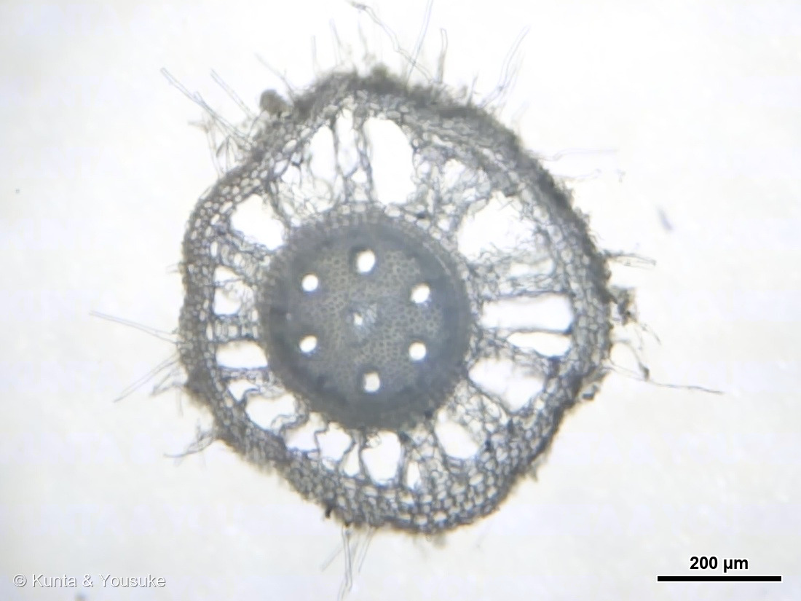
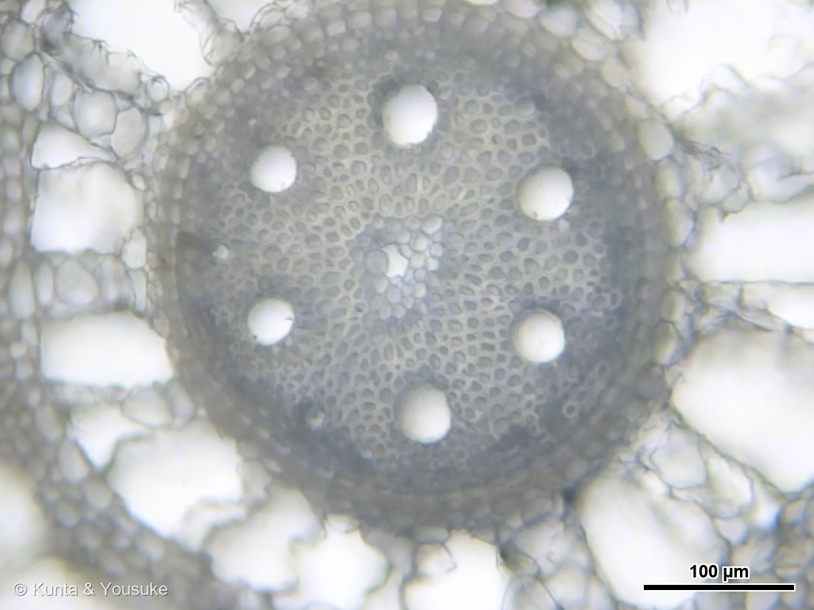
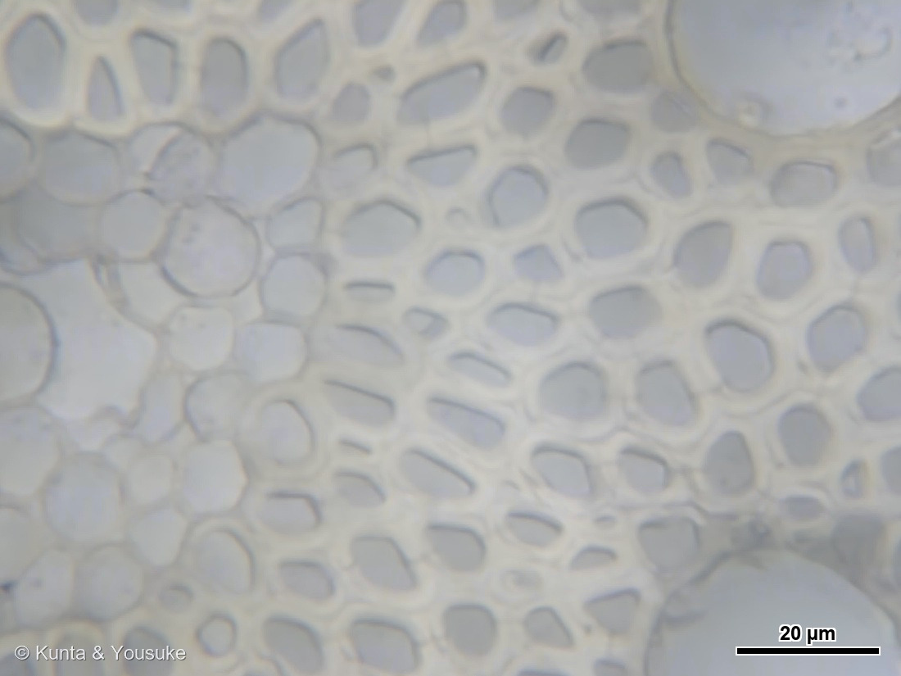
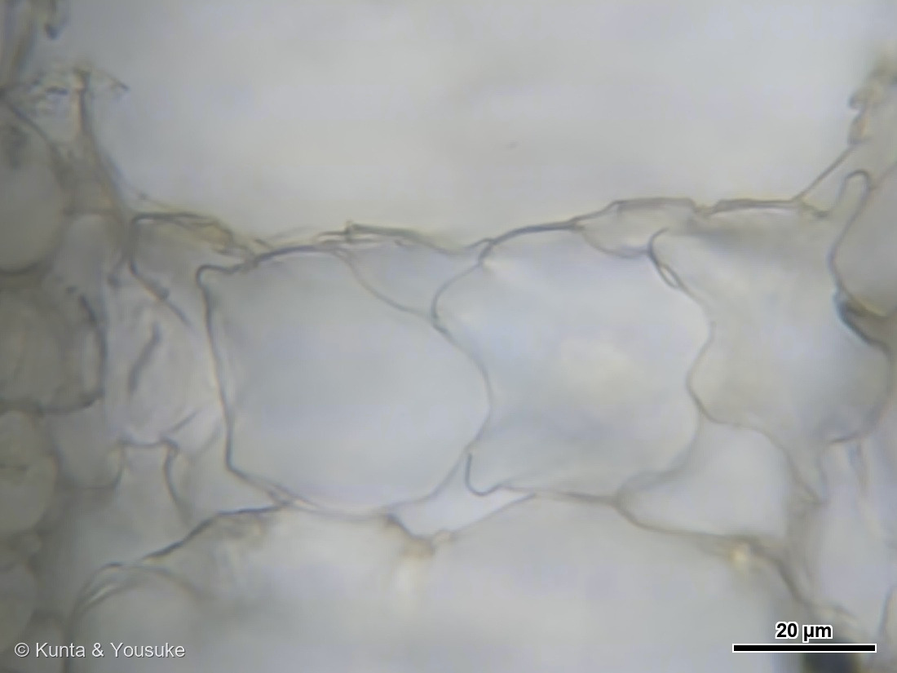
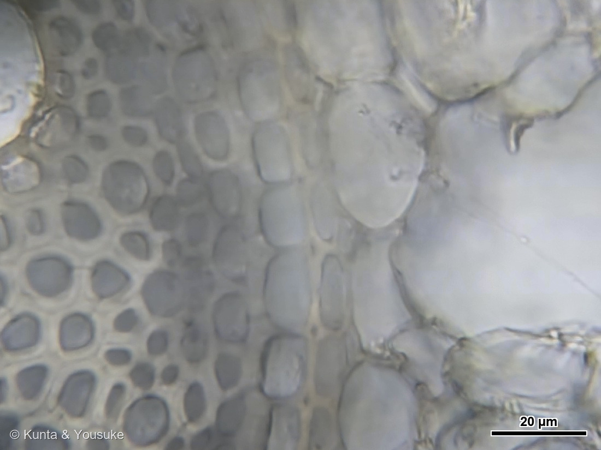

地図を読み込んでいるよ…
🔍 写真も地図も、押しているあいだ拡大して見られるよ（スマホは指を置いてすこし待ってね）。
🌍 の地図＝この子がもともと自生している場所を緑に。旧世界の熱帯（アフリカ〜熱帯アジア）と考えられ、いまは世界じゅうの暖地に広がった強害雑草。日本では全国のありふれた夏の雑草。
⚠原産ははっきりしない——ふつうは旧世界の熱帯（アフリカ〜熱帯アジア）のものといわれるよ。⭐でも今は世界じゅうの暖かい土地に、雑草として広がったので、地図は広めに塗っているんだ。日本では全国のありふれた夏の草。⚠だから「ここが原産」ときっぱりは言えなくて、“暖かいところなら、たいていいる子”だと思ってね。
⚠ 地図は国（日本と中国だけ県・省）までしか塗れないから、ほんとうの分布より広く見えていることがあるよ。地図はだいたいの場所。正確なところは、上の文を見てね。
オヒシバ（雄日芝）
Eleusine indica (L.) Gaertn.
別名 · チカラグサ（力草）／ 原産 · 旧世界の熱帯（いまは世界じゅうの暖地に広がる）／ 見どころ · ⭐掌状の穂・C4のクランツ構造・解剖と同定がつながった図鑑初の草
イネ科 · Poaceae（オヒシバ属 Eleusine・スズメガ亜科 Chloridoideae）── 022 エノコログサ・136 トウモロコシに続くイネ科／トウモロコシと同じ C4植物
名前と学名の由来 ── 雄の日芝、力草
- 和名オヒシバ（雄日芝）＝日なたに生える、芝のような草。メヒシバ（雌日芝）に対して、太くて、がっしり丈夫だから「雄」。おまけのメヒシバ（穂が糸みたいに細くしなだれる）とならべると、「雄」と「雌」の意味がよくわかるよ。
- ⭐別名チカラグサ（力草）＝茎や葉が、とても丈夫。引っぱってもなかなか切れないから、子どもが2本をからめて引き合う「草相撲」の草になった。──踏まれても、抜かれかけても、立ち上がる、力持ちの草。
- ⭐属名 Eleusine（エレウシネ）＝ギリシャの町エレウシス（Eleusis）から。穀物の女神デメテルの聖地だった場所。イネ科（穀物の一族）にふさわしい名前だね。
- 種小名 indica＝「インドの」。──でもこの子は、世界じゅうの暖かい土地に広がった雑草。110 サルスベリ・143 シャリンバイの indica と同じで、むかしの学名の「東の方」ラベルなんだ。
この植物のこと ── 炎天下に、いちばん元気
- 日なたの畑・道ばた・グラウンドのすみに生える一年草。夏から秋に、掌（てのひら）を広げたような穂（掌状の花序）を立てる。
- ⭐⭐この子は C4植物（スズメガ亜科）。136 トウモロコシと同じ仲間だよ。C4は、二酸化炭素を葉の中でぎゅっと濃縮するしくみで、暑さ・強い光・乾燥に、とても強い。──だから、ほかの草がぐったりする真夏の炎天下の照り返しの中で、この子はいちばん元気なんだ。
- ⭐株元が、平たくつぶれて白っぽい（稈が扁平・叢生）。これがオヒシバの決め手のひとつ。そしてひげ根をがっしり張る（だから「力草」）。
⭐⭐ 解剖と同定が、つながった ── クランツ構造（C4）


⭐ この節の写真だよ。ボタンで切り替えてね（番号は上のギャラリーからのつづき）。
この子は、図鑑で初めて「体のしくみ（解剖）」と「名前（同定）」が、一本の草でつながった草なんだ。
- 昨日、穂（掌状）と株元（扁平・白い）と根で、オヒシバと同定した。オヒシバはC4植物——ということは、葉にクランツ構造（維管束を中心とした、環状の構造）があるはず。
- 今日、その葉を切って、40倍で確かめた（写真⑥）。⭐維管束のまわりを、葉緑体でびっしり詰まった「維管束鞘細胞」が、濃い緑のリング（花輪＝ドイツ語で Kranz）で囲んでいる。そのさらに外に、葉肉細胞が放射状に並ぶ。──この二段構えの部屋割りが、C4が炭素を濃縮する舞台なんだ。
- ⭐燻太さんの観察が、正確だった：写真⑦で、手前の細胞には葉緑体が粒として固まって見え、空っぽに見える細胞は、切片にしたとき葉緑体が水にこぼれた跡（アーティファクト）。──「見えない」を「無い」と誤解しない、いちばん大事な目。
- ⭐低倍（写真④⑤）で見ると、その“花輪”が、維管束ごとに、たくさん並ぶ。参考にした資料（本物のオヒシバのクランツ写真）と、ぴったり一致した。
- 📌つまり：穂で決めた名前（オヒシバ＝C4）と、葉を切って見たしくみ（クランツ）が、同じ一本の草の上で、答え合わせになった。119 ジャガイモのデンプン以来の顕微鏡の草だけど、「同定」と「解剖」がここまで手をつないだのは、この子が初めて。
⭐⭐ 根も、切ってみた ── 車輪のような空洞





⭐ この節の写真だよ。ボタンで切り替えてね（番号は上のギャラリーからのつづき）。
- ⭐葉のつぎは、根を切った（写真⑧〜⑫）。──⭐出てきたのは、車輪みたいな形だった。
- ⭐⭐まんなかの円い部分が「中心柱」。⭐その中に、大きな丸い穴が六つ、輪になって並んでいる（写真⑨）。⭐これが水を運ぶ道管だよ。⭐まわりの小さな細胞は壁がぶあつい（写真⑩）——⭐根の芯は、かたい。
- ⭐⭐⭐そして、そのまわり。皮層に、放射状の大きな空洞がぐるりと並んでいる。⭐空洞と空洞のあいだは、細胞の列が橋のように渡してある（写真⑪が、その橋のアップだよ）。──⭐だから車輪のスポークみたいに見えるんだ。
- ⭐⭐これは「通気組織（つうきそしき／アエレンキマ）」だと思う。──根の皮層の細胞が、決められたとおりに死んで（プログラム細胞死）できる空隙で、⭐地上の茎や葉から、根の先まで空気（酸素）を送る通り道になるんだ。
- ⭐⭐⭐でも、ここからが面白いところ。──⚠通気組織は、ふつう「水につかる植物」のものなんだ。
- イネのような湿地の植物は、⭐水につかっていなくても、いつも通気組織を作っている（オーキシン依存の「恒常的」な形成）。
- ⚠いっぽう、トウモロコシのような湿地でないイネ科は、ふつうの土では通気組織をほとんど作らない。⭐水につかったときにだけ、エチレンと活性酸素の合図で作るんだ。
- ⚠⚠そして、オヒシバは道ばたの草。水につかる草ではない。⭐なのに、こんなにはっきり空洞がある。
- ⭐⭐考えられることは、いくつかある：
- ⭐雨のあとなどで、いっとき土が水びたしになっていたのかもしれない。
- ⭐⭐あるいは「やせた土」だからかもしれない。──⭐出典にはこう書いてあった：通気組織は「乾燥土壌や貧栄養土壌では、細胞を維持するコストを削減し、限られたエネルギーを有効に利用することで根を深く広く張ることに貢献」する、と。⭐栄養が足りないと、エチレンへの感じやすさが高まって、通気組織ができるとも。
- ⚠切片を作るときに、皮層がつぶれてできた見かけの空洞という可能性も、正直に残しておく。
- ⭐⭐⭐ぼくが「たぶん本物だ」と思う理由は、⭐空洞のあいだに、細胞の橋がきれいに残っていること（写真⑪）。⭐ただ潰れただけなら、こんなに規則正しく放射状に残らないと思うんだ。⚠でも、断定はしない。
- ⭐⭐もし「やせた土だから」が当たっているなら——この空洞は、この草の強さの一部だ。⭐細胞を減らして、そのぶんのエネルギーで根を遠くまで伸ばす。──⭐上に書いた別名「チカラグサ（力草）」、そして「炎天下にいちばん元気」という顔つきと、ちゃんとつながってくる。⚠ただし、これはぼくの想像で、この株について確かめたわけではないよ。
- ⭐最後にもうひとつ。写真⑫を見て。⭐中心柱と皮層の境目に、四角い細胞がきちんと縦一列に並んでいるでしょう。⭐これは「内皮（ないひ）」だと思う。──⭐根が吸った水は、ここを必ず通らないと中心柱に入れない。水の関所みたいな層なんだ。⚠その決め手になる「カスパリー線」は、染めないと見えないので、ここでは確認できていない。
- ⭐同じイネ科の136 トウモロコシとは、上の節の「C4」でつながっていたけれど、⭐この「通気組織」でも、また出会うことになったね。⭐どちらも「湿地ではないイネ科」という同じ立場の子だよ。
⭐ 昨日の草は、別の子だった ── 根ごと抜くということ
- 一昨日の夜、燻太さんが通勤路の茂みの草を顕微鏡で見て、「クランツっぽい」と気づいた。でも翌朝の葉っぱの写真だけでは、種を決められなかった（イネ科は、穂と葉舌と株元がそろわないと難しい）。だから、いったん宿題にした。
- ⚠そのとき陽介は「幅広の葉は、オヒシバの顔じゃないかも」と、名前を保留した。
- そして今日、根ごと1本、まるごと抜いた標本（写真①）と、掌状の穂（写真②）で、オヒシバと確定。──さらに、今日の切片を見た燻太さんが「昨日のとは、明らかに違う」と言った。
- ⭐だから、昨日の茂みの草は、たぶん別の種（おそらくC3）。混ざった茂みの中では、別の草の葉を見ていたんだ。⭐根ごと1本を抜いて、穂まで確かめたから、「昨日のと今日のは、別の子」だと分かった。──100 シロイヌナズナ以来の「根まである標本」。まるごと1個体は、いちばん強い証拠なんだね。
同定について
⭐イネ科は、穂・葉舌・株元がそろって、はじめて決まる（葉だけでは危ない）。この標本は、そろった。
- ⭐決め手＝掌状の穂：数本の穂が、一点から指を広げた手のように出る（2〜7個）。扁平な軸に、小穂が二列でびっしり並び、芒（のぎ）はない。
- 株元＝扁平で白っぽい・叢生（オヒシバの決め手）。ひげ根。葉舌は膜質で約1mm。
- 落とせる似た草：メヒシバ（＝おまけ／穂が糸のように細く、しなだれる・全体に華奢）／タツノツメガヤ（穂の先に爪のような突起が出る）／ギョウギシバ（穂は細く、小穂が一列）。──穂の太さと、扁平な株元で、オヒシバに絞れる。
- C4の確認：葉の横断面にクランツ構造（維管束鞘の葉緑体リング）＝上の節のとおり。名前（Chloridoideae＝C4）と、体のつくりが一致。
- ⭐⭐葉が「2つ折り」＝オヒシバの芽のしるし（燻太さんの観察）：オヒシバは芽のとき、葉が2つ折り（folded）で出る。だから株元が平たくつぶれて、白〜銀色になる（英名の別名 silver crabgrass ＝銀のメヒシバ、はこのため）。⭐メヒシバとの見分けもここ：メヒシバ（crabgrass）は芽で葉が「巻いて」出る→茎が丸い。オヒシバは折れて出る→茎が平たい。⭐低倍の切片がV字に折れて写ったのも、この折り葉の証拠。
- ⚠シマスズメノヒエ（Paspalum dilatatum）ではない：あちらは穂（総）が中軸に沿って3〜7本並ぶ（掌状でない）・小穂が卵形で、ふちに絹糸状の長毛・葉は平ら。この子は掌状・とがった二列の櫛歯の小穂で絹毛なし・2つ折りの扁平な株元＝ぜんぶ逆。⭐穂の出方（一点から＝掌状）と、折り葉の平たい株元が、シマスズメノヒエを外す決め手。
参考：三河の植物観察「オヒシバ」（1年草・稈は叢生で扁平・葉舌は膜質約1mm・花序は掌状で総状花序が2〜7個・小穂に芒なし・別名チカラグサ）、里山と水辺の植物「オヒシバ」（穂は掌状・メヒシバより太い・株元が扁平）。クランツ構造・C4（維管束鞘に葉緑体を集めて二酸化炭素を濃縮）は、オヒシバ（スズメガ亜科）の葉の横断面で確認。参考資料（本物のオヒシバのクランツ写真・ラベル付き）と照合した。／根の通気組織については 名古屋大学 生物機能開発利用研究センター「根の通気組織の形成メカニズム」（通気組織＝植物体内に形成される空隙で、地上部から冠水した根に酸素を供給する／破生通気組織は根の皮層細胞の選択的細胞死によって形成／イネなど湿生植物は好気的環境でもオーキシン依存的に恒常的に形成するが、トウモロコシなど非湿生植物は好気的環境では通気組織形成はほとんどみられず、冠水に応答して誘導的に形成／冠水時はエチレンと活性酸素種、栄養不足時はエチレンへの感受性が高まることで誘導／⭐乾燥土壌や貧栄養土壌では「細胞を維持するコストを削減し、限られたエネルギーを有効に利用することで根を深く広く張ることに貢献」。⚠オヒシバそのものについての記載は、この資料には無い）。